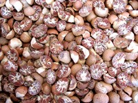
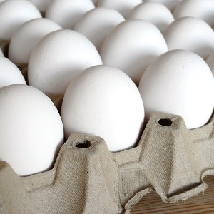
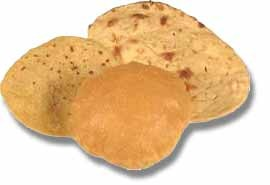
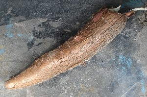
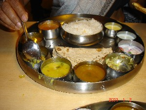
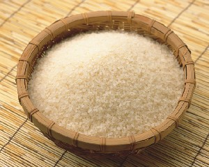
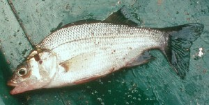

खाद्य सामग्री
ɑkɑjirɑ1 आकाजीरा MORPH: ɑkɑ-jirɑ. N सं. chilli; मिर्च. SD: edible item, खाद्य सामग्री. SEE: ɑkɑjirɑ2 ‘spicy’ ‘तीखा आकाजीराhm:{2}’.
bɑkle बाक्ले Etym: North Andaman; उत्तरी अण्डमान. N सं. a kind of vegetarian food; एक प्रकार की शाकाहारी खाद्य सामग्री. SD: edible item, खाद्य सामग्री.
bɛ बै N सं. liquor; शराब. SD: edible item, खाद्य सामग्री.
 bɛi2 बैई Etym: Jeru; जेरू. VAR: bei बेई; bey बेय. N सं. liquor; शराब. SD: edible item, खाद्य सामग्री. SEE: bɛi1 ‘bottle’ ‘बोतल; शीशी बैईhm:{1}’.
bɛi2 बैई Etym: Jeru; जेरू. VAR: bei बेई; bey बेय. N सं. liquor; शराब. SD: edible item, खाद्य सामग्री. SEE: bɛi1 ‘bottle’ ‘बोतल; शीशी बैईhm:{1}’.
biriu2 बीरीऊ VAR: biriyu बीरीयू; biːriw बीऽरीव. N सं. milk; दूध. SD: edible item, खाद्य सामग्री. SEE: biriu1 ‘dirty water’ ‘गंदा पानी बीरीऊhm:{1}’.
biʈʰe2 बीठे VAR: biːʈte बीऽटते. N सं. flour; आटा. SD: edible item, खाद्य सामग्री. SEE: biʈʰe1 ‘ash’ ‘राख बीठेhm:{1}’.
boːlcɑː बोऽलचाऽ N सं. tea without sugar and milk; बिना चीनी और दूध की चाय. SD: edible item, खाद्य सामग्री. NT: Tea made of Bol leaves. बोल पत्ती की चाय.
 cɑeone चाएओने VAR: cɑy-one चायोने. N सं. ghee, clarified butter; घी. SD: edible item, खाद्य सामग्री.
cɑeone चाएओने VAR: cɑy-one चायोने. N सं. ghee, clarified butter; घी. SD: edible item, खाद्य सामग्री.
cɑi चाई Etym: Hindi; हिन्दी. N सं. tea; चाय. SD: edible item, खाद्य सामग्री.
cɑtɑli चाताली Etym: North Andaman; उत्तरी अण्डमान. N सं. a kind of vegetarian food; एक प्रकार का शाकाहारी खाना. SD: edible item, खाद्य सामग्री.
cokbitʰomu चोकबीथोमू MORPH: cokbi-tʰomu. N सं. turtle flesh; कछुए का मांस. SD: edible item, खाद्य सामग्री, marine, समुद्री.
cokele चोकेले Etym: North Andaman; उत्तरी अण्डमान. N सं. morsel; गस्सा. SD: edible item, खाद्य सामग्री.
 |
 cɔm2 चौम VAR: ̘com चोम. N सं. betelnut; सुपारी. SD: edible item, खाद्य सामग्री, flora, फूल-पत्ती. SEE: cɔm1 ‘basket’ ‘टोकरी चौमhm:{1}’; cɔm3 ‘pointed object, any’ ‘नुकीला औज़ार, कोई भी चौमhm:{3}’; cɔm4 ‘shark, small’ ‘शार्क, छोटी चौमhm:{4}’; cɔm5 ‘stick, wooden’ ‘छड़, लकड़ी की चौमhm:{5}’; cɔm6 ‘tree’ ‘पेड़ चौमhm:{6}’.
cɔm2 चौम VAR: ̘com चोम. N सं. betelnut; सुपारी. SD: edible item, खाद्य सामग्री, flora, फूल-पत्ती. SEE: cɔm1 ‘basket’ ‘टोकरी चौमhm:{1}’; cɔm3 ‘pointed object, any’ ‘नुकीला औज़ार, कोई भी चौमhm:{3}’; cɔm4 ‘shark, small’ ‘शार्क, छोटी चौमhm:{4}’; cɔm5 ‘stick, wooden’ ‘छड़, लकड़ी की चौमhm:{5}’; cɔm6 ‘tree’ ‘पेड़ चौमhm:{6}’.
curuŋ चूरूङ N सं. sweets; मिठाई.  ɑtʰirenu curuŋ-bi rɑlišu ijuko आथीरेनू चूरूङबी रालीशू ईजूको. The children ate up all the sweets. बच्चों ने सारी मिठाई खा ली।. SD: edible item, खाद्य सामग्री.
ɑtʰirenu curuŋ-bi rɑlišu ijuko आथीरेनू चूरूङबी रालीशू ईजूको. The children ate up all the sweets. बच्चों ने सारी मिठाई खा ली।. SD: edible item, खाद्य सामग्री.
ɖɑkɑr डाकार VAR: ɖɑkɑɽ डाकाड़. N सं. a variety of potato; एक प्रकार का आलू. SD: edible item, खाद्य सामग्री. SEE: dɑkɑr1 ‘potato’ ‘आलू दाकारhm:{1}’; dɑkɑr2 ‘this (proximate)’ ‘यह (निकटस्थ) दाकारhm:{2}’.
ɖikʰili डीखीली N सं. sugarcane; गन्ना. SD: flora, फूल-पत्ती, edible item, खाद्य सामग्री.
ɖirim2 डीरीम N सं. opium; अफ़ीम. SD: edible item, खाद्य सामग्री. SEE: ɖirim1 ‘black’ ‘काला डीरीमhm:{1}’.
 ekɑjirɑcɛrel2 ऐकाजीराचैरेल MORPH: ekɑ-jirɑ-cɛrel. N सं. green chilli; हरी मिर्ची. SD: edible item, खाद्य सामग्री. SEE: ekɑjirɑcɛrel1 ‘greedily’ ‘लालच से ऐकाजीराचैरेलhm:{1}’.
ekɑjirɑcɛrel2 ऐकाजीराचैरेल MORPH: ekɑ-jirɑ-cɛrel. N सं. green chilli; हरी मिर्ची. SD: edible item, खाद्य सामग्री. SEE: ekɑjirɑcɛrel1 ‘greedily’ ‘लालच से ऐकाजीराचैरेलhm:{1}’.
 elɔne एलौने VAR: elone एलोने; ɛlɔːne ऐलौऽने. ADJ वि. fat; चर्बी. SD: edible item, खाद्य सामग्री.
elɔne एलौने VAR: elone एलोने; ɛlɔːne ऐलौऽने. ADJ वि. fat; चर्बी. SD: edible item, खाद्य सामग्री.
eltite एल्तीते N सं. egg yolk; अंडे की ज़र्दी. SD: edible item, खाद्य सामग्री.
emmulːy एम्मूलऽय MORPH: em-mulːy. N सं. ghee; घी. SD: edible item, खाद्य सामग्री.
entɑsue एन्तासूए MORPH: entɑ-sue. VAR: entɑ-šuye एन्ताशूये. N सं. cooked food; पका हुआ खाना. SD: edible item, खाद्य सामग्री.
epʰero एफेरो N सं. small egg of turtle; कछुए का छोटा अंडा. SD: edible item, खाद्य सामग्री.
epʰerɔpʰo एफेरौफो Etym: Khora; खोरा. N सं. egg; अंडा. SD: edible item, खाद्य सामग्री.
erceʈɑ एरचेटा MORPH: er-ceʈɑ. N सं. tea made of the ‘bol’ leaf; बोल पत्ते की चाय. SD: edible item, खाद्य सामग्री. SEE: bol ‘tree’ ‘पेड़ बोल ’.
erkʰerɑ एरखेरा MORPH: er-kʰerɑ. N सं. curry; तरी; कढ़ी. SD: edible item, खाद्य सामग्री.
ermetɛi2 एरमेतैई MORPH: er-me-tɛi. N सं. mother’s milk; मां का दूध. SD: edible item, खाद्य सामग्री. SEE: ermetɛi1 ‘breast’ ‘स्तन एरमेतैईhm:{1}’.
eteʈɔ एतेटौ N सं. milk/gum from the Koeto plant; दूध/ कोएतो पौधे से निकलने वाला रस या दूध. SD: edible item, खाद्य सामग्री.
 eʈʰomoɖop एठोमोडोप MORPH: e-ʈʰomo-ɖop. N सं. raw flesh; कच्चा मांस. SD: edible item, खाद्य सामग्री.
eʈʰomoɖop एठोमोडोप MORPH: e-ʈʰomo-ɖop. N सं. raw flesh; कच्चा मांस. SD: edible item, खाद्य सामग्री.
eʈɔlom एटौलोम N सं. honeycomb, white; सफ़ेद छत्ता. SD: edible item, खाद्य सामग्री.
eulu एऊलू VAR: ewlu एवलू. N सं. seed inside the fruits; kernel of fruit; फल के अंदर के बीज; फल का मुख्य भाग. SD: flora, फूल-पत्ती, edible item, खाद्य सामग्री.
 ɛone ऐओने MORPH: ɛ-one. N सं. milk of coconut; नारियल पानी. SD: edible item, खाद्य सामग्री.
ɛone ऐओने MORPH: ɛ-one. N सं. milk of coconut; नारियल पानी. SD: edible item, खाद्य सामग्री.
 ɛrcɑrɑ1 ऐरचारा MORPH: ɛr-cɑrɑ. N सं. chips; pieces, very fine; कतला; बहुत महीन टुकड़े. mino-ɛr-cɑrɑ मीनो-ऐरचारा. potato chips. आलू के कतले. SD: edible item, खाद्य सामग्री. SEE: ɛrcɑrɑ2 ‘wood shaving; sawdust’ ‘लकड़ी का घिसा हुआ टुकड़ा; बुरादा ऐरचाराhm:{2}’.
ɛrcɑrɑ1 ऐरचारा MORPH: ɛr-cɑrɑ. N सं. chips; pieces, very fine; कतला; बहुत महीन टुकड़े. mino-ɛr-cɑrɑ मीनो-ऐरचारा. potato chips. आलू के कतले. SD: edible item, खाद्य सामग्री. SEE: ɛrcɑrɑ2 ‘wood shaving; sawdust’ ‘लकड़ी का घिसा हुआ टुकड़ा; बुरादा ऐरचाराhm:{2}’.
ɛʈɔ ऐटौ MORPH: ɛ-ʈɔ. N सं. soft white honeycomb; सफ़ेद मधु छत्ता. SD: edible item, खाद्य सामग्री.
ibec ईबेच N सं. honeycomb; मधुकोष; छत्ता. SD: edible item, खाद्य सामग्री, habitat, रहन-सहन.
iboɛ ईबोऐ ADJ वि. refined (oil); पक्का तेल. SD: edible item, खाद्य सामग्री.
 |
 imulu1 ईमूलू MORPH: i-mulu. VAR: mulu मूलू. N सं. egg; अंडा. SD: edible item, खाद्य सामग्री. SEE: imulu2 ‘seed’ ‘बीज ईमूलूhm:{2}’.
imulu1 ईमूलू MORPH: i-mulu. VAR: mulu मूलू. N सं. egg; अंडा. SD: edible item, खाद्य सामग्री. SEE: imulu2 ‘seed’ ‘बीज ईमूलूhm:{2}’.
išorɛfe ईशोरैफे MORPH: išo-rɛfe. N सं. food (his); भोजन (उसका). ʈʰ-icɔ-rɛfe ठीचौरैफे. my food. मेरा भोजन. ɲi-šiyǝ-refe ञीशीयरेफे. your food. तुम्हारा भोजन. SD: edible item, खाद्य सामग्री.
jiːforɔːy जीऽफोरौऽय N सं. boiled turtle meat; कछुए का उबला मांस. SD: edible item, खाद्य सामग्री.
jo1 जो VAR: jɔ जौ. N सं. food; खाना. SD: edible item, खाद्य सामग्री. SEE: jo2 ‘song’ ‘गीत जोhm:{2}’; jo3 ‘take’ ‘लेना जोhm:{3}’.
 |
kʰɑletmu खालेत्मू VAR: kʰɑletmo खालेत्मो. N सं. bread; रोटी. SD: edible item, खाद्य सामग्री.
 |
kʰɑrŋe खारङे N सं. sweet potato; शकरकंदी. SD: edible item, खाद्य सामग्री.
 kɑšɑr काशार N सं. tea; चाय. SD: edible item, खाद्य सामग्री. NT: This is a Jeru word. एक जेरो शब्द।.
kɑšɑr काशार N सं. tea; चाय. SD: edible item, खाद्य सामग्री. NT: This is a Jeru word. एक जेरो शब्द।.
kelɛtmo1 केलैत्मो VAR: kelɛʈmo केलैटमो. N सं. fresh wheat flour; ताज़ा आटा. SD: edible item, खाद्य सामग्री. SEE: kelɛtmo2 ‘soil’ ‘मिट्टी केलैत्मोhm:{2}’.
kʰidɛrtutkʰiɖi खीदैरतूतखीडी MORPH: kʰidɛr-tut-kʰiɖi. N सं. round coconut; गोल नारियल. SD: edible item, खाद्य सामग्री.
kocɑtei2 कोचातेई MORPH: kocɑ-tei. Etym: Pujjukar; पुज्जूकर. N सं. wine; शराब. ŋo-kocɑ-tei-bi-kʰu-m ङोकोचातेईबीखूम. Don’t drink wine. शराब मत पीयो।. SD: edible item, खाद्य सामग्री. SEE: kocɑtei1 ‘bone’ ‘हड्डी कोचातेईhm:{1}’.
 kɔetoulu कौएतोऊलू MORPH: kɔeto-ulu. N सं. jackfruit seed; कटहल का बीज. SD: edible item, खाद्य सामग्री.
kɔetoulu कौएतोऊलू MORPH: kɔeto-ulu. N सं. jackfruit seed; कटहल का बीज. SD: edible item, खाद्य सामग्री.
kɔrɔɲone कौरौञोने MORPH: kɔrɔɲ-one. N सं. oil, of dugong; डूगोंग का तेल. SD: hunting & gathering, शिकार एवं संचय सम्बंधी, edible item, खाद्य सामग्री.
 lɑːe2 लाऽए VAR: lɑɛ-pʰir लाऐफीर. N सं. sugarcane; गन्ना. SD: edible item, खाद्य सामग्री. SEE: lɑːe1 ‘bird’ ‘पक्षी लाऽएhm:{1}’.
lɑːe2 लाऽए VAR: lɑɛ-pʰir लाऐफीर. N सं. sugarcane; गन्ना. SD: edible item, खाद्य सामग्री. SEE: lɑːe1 ‘bird’ ‘पक्षी लाऽएhm:{1}’.
loitok लोईतोक Etym: North Andaman; उत्तरी अण्डमान. N सं. a kind of vegetarian food; एक प्रकार का शाकाहारी खाना. SD: edible item, खाद्य सामग्री.
loyeʈʈɔ लोयेट्टौ N सं. pumpkin; कद्दू. SD: edible item, खाद्य सामग्री.
lɔeʈʰo लौएठो N सं. an edible bitter fruit-yielding creeper; कड़वे फल वाली बेल. SD: edible item, खाद्य सामग्री. NT: This is edible. करेले जैसी कड़वे फल वाली बेल । इसे पकाकर खाते हैं।.
meteimul मेतेईमूल MORPH: metei-mul. VAR: mettɑy-mul मेत्तायमूल; mɛ-tei-mul मैतेईमूल; mettei मेत्तेई. N सं. breast milk; milk (mother’s); स्तन का दूध; मां का दूध. SD: edible item, खाद्य सामग्री.
mɛkʰɛŋ मैखैङ N सं. opium; अफ़ीम. SD: edible item, खाद्य सामग्री.
 |
 mino1 मीनो VAR: minɔ मीनौ. N सं. potato; आलू.
mino1 मीनो VAR: minɔ मीनौ. N सं. potato; आलू.  minu buɑ kottrɑl jio मीनू बूआ कोत्तराल जीओ. The potato is inside the soil. आलू मिट्टी के अंदर है।. SD: edible item, खाद्य सामग्री. SEE: mino2 ‘tuber’ ‘ट्यूबर मीनोhm:{2}’.
minu buɑ kottrɑl jio मीनू बूआ कोत्तराल जीओ. The potato is inside the soil. आलू मिट्टी के अंदर है।. SD: edible item, खाद्य सामग्री. SEE: mino2 ‘tuber’ ‘ट्यूबर मीनोhm:{2}’.
minocɔfe मीनोचौफे MORPH: mino-cɔfe. N सं. potatoes, lots of; बहुत सारे आलू. SD: edible item, खाद्य सामग्री.
minotumtɔplo मीनोतूमतौपलो MORPH: mino-tum-tɔplo. N सं. a type of potato; एक प्रकार का आलू. SD: edible item, खाद्य सामग्री.
mioeone मीओएओने MORPH: mioe-one. N सं. lemon juice; sour juice; नींबू का रस; खट्टा रस. SD: edible item, खाद्य सामग्री.
mul मूल N सं. cream of milk; मलाई. SD: edible item, खाद्य सामग्री.
nimok नीमोक Etym: Hindi; हिन्दी. N सं. salt; नमक. nimok-pʰobe नीमोकफोबे. There is no salt. (इसमें) नमक नहीं है।. SD: edible item, खाद्य सामग्री.
ŋɑlɑe ङालाए N सं. a kind of potato; आलू की एक किस्म. SD: edible item, खाद्य सामग्री.
one ओने VAR: ɛwoːne ऐवोऽने. N सं. oil; juice; तेल; रस. SD: edible item, खाद्य सामग्री. SEE: ino1 ‘water’ ‘पानी ईनोhm:{1}’.
pʰiriu फीरीऊ N सं. potato, boiled; उबला आलू. SD: edible item, खाद्य सामग्री.
pʰɔroʈ फौरोट N सं. sea cucumber; पानी या समुद्री खीरा. SD: marine, समुद्री, edible item, खाद्य सामग्री.
pʰune फूने N सं. yellow juice which comes out of honey; पीला रस जो शहद में से निकलता है. SD: edible item, खाद्य सामग्री.
rɑone राओने MORPH: rɑ-one. N सं. lard, pig fat; सूअर का तेल या चर्बी. SD: edible item, खाद्य सामग्री.
rɑʈʰomoise राठोमोईसे MORPH: rɑ-ʈʰomo-ise. N सं. pig’s meat, boiled; सूअर का उबला हुआ मांस. SD: edible item, खाद्य सामग्री.
 |
 rɛfe1 रैफे VAR: rɛfɛ रैफै; rɛɸe रैफे; rɛpʰe रैफे; rɛːpʰi रैऽफी; rɛpʰi रैफी. N सं. cooked meal; food; lunch or dinner; तैयार भोजन; खाना; मध्याह्न भोजन या रात्रि भोजन.
rɛfe1 रैफे VAR: rɛfɛ रैफै; rɛɸe रैफे; rɛpʰe रैफे; rɛːpʰi रैऽफी; rɛpʰi रैफी. N सं. cooked meal; food; lunch or dinner; तैयार भोजन; खाना; मध्याह्न भोजन या रात्रि भोजन.  rɛpʰel suit nɔl रैफेल सूईत नौल. The food is well cooked. खाना अच्छी तरह पका है।. ʈʰu rɛfe-bi tɑ boiɑm ठू रैफेबी ता बोईआम. I cook food. मैं खाना बनाता हूं।. SD: edible item, खाद्य सामग्री. SEE: rɛfe2 ‘rice’ ‘चावल रैफेhm:{2}’; ebui ‘cooked food’ ‘पका हुआ खाना एबूई ’.
rɛpʰel suit nɔl रैफेल सूईत नौल. The food is well cooked. खाना अच्छी तरह पका है।. ʈʰu rɛfe-bi tɑ boiɑm ठू रैफेबी ता बोईआम. I cook food. मैं खाना बनाता हूं।. SD: edible item, खाद्य सामग्री. SEE: rɛfe2 ‘rice’ ‘चावल रैफेhm:{2}’; ebui ‘cooked food’ ‘पका हुआ खाना एबूई ’.
 |
 rɛfe2 रैफे VAR: rɛfɛ रैफै; rɛɸe रैफे; rɛpʰe रैफे; rɛːpʰi रैऽफी; rɛpʰi रैफी. N सं. rice; चावल.
rɛfe2 रैफे VAR: rɛfɛ रैफै; rɛɸe रैफे; rɛpʰe रैफे; rɛːpʰi रैऽफी; rɛpʰi रैफी. N सं. rice; चावल.  rɛfebi kɑo रैफेबी काओ. Bring the rice. चावल लाओ।. SD: edible item, खाद्य सामग्री. SEE: rɛfe1 ‘cooked meal; food; lunch or dinner’ ‘तैयार भोजन; खाना; मध्याह्न भोजन या रात्रि भोजन रैफेhm:{1}’; ebui ‘cooked food’ ‘पका हुआ खाना एबूई ’.
rɛfebi kɑo रैफेबी काओ. Bring the rice. चावल लाओ।. SD: edible item, खाद्य सामग्री. SEE: rɛfe1 ‘cooked meal; food; lunch or dinner’ ‘तैयार भोजन; खाना; मध्याह्न भोजन या रात्रि भोजन रैफेhm:{1}’; ebui ‘cooked food’ ‘पका हुआ खाना एबूई ’.
rɛfecɔfe रैफेचौफे MORPH: rɛfe-cɔfe. N सं. lots of food; ढेर सारा खाना. SD: edible item, खाद्य सामग्री.
rɛfedɑlbikɑtɔle रैफेदालबीकातौले MORPH: rɛfe-dɑl-bi-kɑ tɔle. N सं. mixture of dal and rice; चावल और दाल का मिश्रण. SD: edible item, खाद्य सामग्री.
šuke शूके Etym: Hindi; हिन्दी. N सं. tobacco; तंबाकू. SD: edible item, खाद्य सामग्री.
 |
 tɑjiotutbec2 ताजीओतूत्बेच MORPH: tɑjio-tut-bec. VAR: tɑjio-tot-bec ताजिओतोत्बेच; tɑːjiyo-tot-beːc ताऽजीयोतोत्बेऽच. N सं. fish, living creature with hair or scales such as fish; बाल या छिलका युक्त जीव जैसे मछली आदि. SD: fish, मछली, edible item, खाद्य सामग्री. SEE: tɑjiotutbec1 ‘bird’ ‘पक्षी ताजीओतूत्बेचhm:{1}’.
tɑjiotutbec2 ताजीओतूत्बेच MORPH: tɑjio-tut-bec. VAR: tɑjio-tot-bec ताजिओतोत्बेच; tɑːjiyo-tot-beːc ताऽजीयोतोत्बेऽच. N सं. fish, living creature with hair or scales such as fish; बाल या छिलका युक्त जीव जैसे मछली आदि. SD: fish, मछली, edible item, खाद्य सामग्री. SEE: tɑjiotutbec1 ‘bird’ ‘पक्षी ताजीओतूत्बेचhm:{1}’.
tɑːjiyo1 ताऽजीयो N सं. something to eat; खाद्य. SD: edible item, खाद्य सामग्री. SEE: tɑːjiyo2 ‘pool’ ‘तालाब ताऽजीयोhm:{2}’.
torɔm तोरौम N सं. salt; नमक. torɔm ekɑjirɑ cɔkbitʰomo inol etɛše तोरौम एकाजीरा चौक्बीथोमो ईनोल एतैशे. Put salt, chilli and turtle flesh in water (for cooking). (पकाने के लिए) नमक, मिर्च और कछुए का मांस पानी में डालो।. SD: edible item, खाद्य सामग्री.
tʰumel थूमेल N सं. honey; शहद. ʈʰ-ico-tʰumel ठीचोथूमेल. my honey. मेरा शहद. SD: edible item, खाद्य सामग्री.
ʈole टोले VAR: ʈɔle टौले; ʈowe टोवे. N सं. a kind of plain potato; एक प्रकार का मीठा आलू. SD: edible item, खाद्य सामग्री.
ʈoleise टोलेईसे MORPH: ʈole-ise. N सं. potato, boiled; उबला आलू. SD: edible item, खाद्य सामग्री.
 ʈʰumel2 ठूमेल N सं. honeycomb; honey; छत्ता; शहद. SD: edible item, खाद्य सामग्री. SEE: ʈʰumel1 ‘honeybee’ ‘मधुमक्खी ठूमेलhm:{1}’.
ʈʰumel2 ठूमेल N सं. honeycomb; honey; छत्ता; शहद. SD: edible item, खाद्य सामग्री. SEE: ʈʰumel1 ‘honeybee’ ‘मधुमक्खी ठूमेलhm:{1}’.
 ʈʰumelone ठूमेलोने VAR: ʈʰumelɔne ठूमेलौने. N सं. honey; मधु; शहद. SD: edible item, खाद्य सामग्री, hunting & gathering, शिकार एवं संचय सम्बंधी.
ʈʰumelone ठूमेलोने VAR: ʈʰumelɔne ठूमेलौने. N सं. honey; मधु; शहद. SD: edible item, खाद्य सामग्री, hunting & gathering, शिकार एवं संचय सम्बंधी.